Six moves: count alleles, test the null, sample binomially forward, coalesce backward, decompose admixture, detect sweeps with a known FAR.
Learning objectives
- Define allele frequency and genotype frequency, and derive the Hardy-Weinberg genotype distribution from a single allele frequency under the standard assumptions.
- State the four forces that can move a population off Hardy-Weinberg equilibrium and give a worked example of each.
- Describe the Wright-Fisher model as a Markov chain on allele-frequency state, and identify what genetic drift, selection, mutation, and migration each contribute to the transition kernel.
- Compute $r^2$ and $D'$ linkage-disequilibrium statistics from a pair of SNPs, and explain why LD decays exponentially with genetic distance under recombination.
- Relate LD structure along the genome to autocorrelation of a 1D stochastic process.
- Explain the standard coalescent as a backward-in-time stochastic process, derive the expected time to most recent common ancestor (TMRCA) for a sample of $n$ lineages, and state the coalescent's duality with the Wright-Fisher forward model.
- Interpret a PSMC $N_e(t)$ trajectory and describe the inference logic: coalescent events per unit time map to effective population size at that time.
- Describe ADMIXTURE-style unsupervised mixture modelling and explain the "K selection" problem as a model-order selection problem.
- Apply three selection-scan statistics (Tajima's D, iHS, XP-EHH) to a toy dataset and discuss their failure modes.
Part 1 · 25 min Allele Frequencies and Hardy-Weinberg Equilibrium
1.1 From variants to frequencies
Lectures 1–11 treated sequencing data one sample at a time — a FASTQ, a BAM, a VCF, a methylation profile. Population genetics asks a different question: given a collection of genomes from a population, what can we say about the distribution of genetic variation across that population?
The simplest summary is per-variant: at a bi-allelic SNP with alleles $A$ and $a$, count the copies of each allele across all chromosomes in your sample. If you have $N$ diploid individuals, you have $2N$ chromosomes and therefore $2N$ allele counts. The allele frequency of $A$ is $p = \#A / 2N$; of $a$ is $q = \#a / 2N = 1 - p$.
Allele frequencies are the currency of population genetics. Every downstream quantity — genotype frequencies, linkage disequilibrium, expected heterozygosity, effective population size — is built on them.
Three quick conventions:
- Minor allele frequency (MAF): $\min(p, q)$. Below 1% → "rare variant"; 1–5% → "low-frequency"; >5% → "common variant". A lot of methods treat these regimes differently.
- Genotype frequencies: the fraction of individuals with each diploid genotype $AA$, $Aa$, $aa$. Under HWE these are $p^2, 2pq, q^2$ (next subsection), but in general they need not be.
- Ploidy convention: for autosomes, humans are diploid. Sex chromosomes and mitochondria break this; PopGen treats them separately.
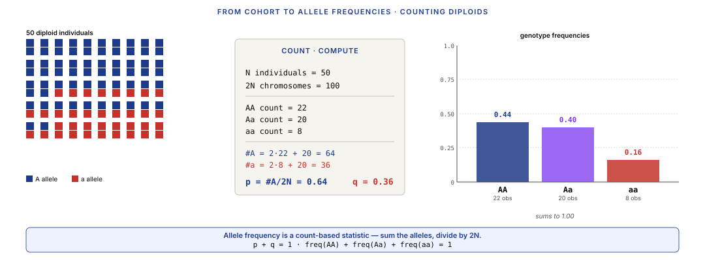
1.2 Hardy-Weinberg equilibrium
The Hardy-Weinberg principle (Hardy 1908, Weinberg 1908) states that under a set of idealised conditions, allele frequencies in a population don't change across generations, and genotype frequencies are a deterministic function of allele frequencies:
$$P(AA) = p^2, \quad P(Aa) = 2pq, \quad P(aa) = q^2$$
The conditions:
- Random mating (no assortative mating by genotype).
- No selection (all genotypes have equal fitness).
- No mutation (alleles don't switch identity between generations).
- No migration (no external alleles entering the population).
- Infinite population size (no drift — allele frequencies don't fluctuate stochastically).
None of these conditions hold in real populations. So why is HWE the centrepiece of population genetics?
Because it's the null model. The interesting question is always how the data deviates from HWE, and those deviations are the signal. A locus that matches HWE has nothing interesting happening at it. A locus that deviates strongly — excess homozygosity, excess heterozygosity, unexpected genotype clusters — is where the biology is.
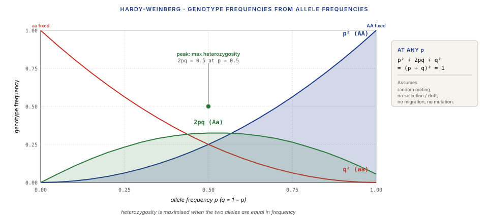
1.3 Deviations from HWE as signal
Five canonical deviations, each diagnostic of a different biological process:
- Excess homozygosity — too many $AA$ and $aa$, not enough $Aa$. Suggests population structure (two sub-populations with different allele frequencies pooled as if they were one — the Wahlund effect) or inbreeding (related individuals mating, offspring inheriting the same allele from both parents).
- Excess heterozygosity — too many $Aa$. Suggests heterozygote advantage / overdominance (a known example: sickle cell anaemia, where $Aa$ carriers are protected from malaria) or negative assortative mating.
- Selection against a specific genotype — e.g. excess of $AA$ + $Aa$ with a depletion of $aa$. Suggests directional selection against $a$.
- Allele-frequency changes between generations — $p$ shifts systematically. Suggests drift, selection, or migration.
- Genotype patterns correlated with environment — HWE may hold within each subpopulation but not across pooled data. Suggests population stratification (L13 GWAS confounding).
Real populations deviate for all these reasons simultaneously. Modern tests (vcftools --hardy, PLINK's --hwe) compute per-SNP HWE p-values across millions of SNPs. Interpretation:
- Extreme deviation at a single locus: could be selection, or genotyping error (always check).
- Deviations across many loci in the same direction: structure or admixture.
- Deviations at lineage-specific loci (MT, Y chromosome): expected; these are haploid.
Part 2 · 40 min Forces Shaping Variation
2.1 The Wright-Fisher model
The Wright-Fisher (WF) model (Fisher 1930, Wright 1931) is the standard idealised model for how allele frequencies evolve generation-to-generation. It makes simplifying assumptions that every more-realistic model generalises from.
The model:
- Finite population of $N$ diploid individuals ($2N$ chromosomes).
- Discrete, non-overlapping generations.
- Each chromosome in generation $t+1$ is an independent random draw (with replacement) from the $2N$ chromosomes in generation $t$.
- No selection, no mutation, no migration — just sampling.
The allele count in generation $t+1$ is then binomial:
$$X_{t+1} \sim \text{Binomial}(2N, \, p_t)$$
where $p_t = X_t / 2N$ is the allele frequency in generation $t$. This defines a Markov chain on the state space $\{0, 1, 2, \ldots, 2N\}$ with transition probabilities given by the binomial.
Two absorbing states: $X = 0$ (allele $a$ is extinct, all $A$) and $X = 2N$ (allele $A$ is extinct, all $a$). Once you hit either, you stay — "fixation" of one or the other allele. Given enough generations, every finite WF population eventually fixes.
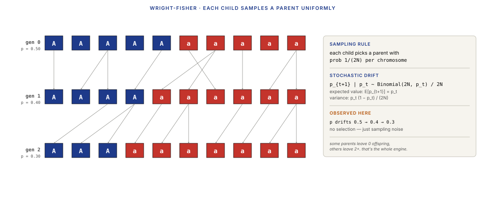
2.2 Genetic drift
Genetic drift is the change in allele frequency from generation to generation due purely to finite-population sampling. In a population of size $N$, each generation's allele frequency has:
- Mean: $\mathbb{E}[p_{t+1} \mid p_t] = p_t$ (drift is unbiased — it doesn't push alleles up or down on average).
- Variance: $\text{Var}(p_{t+1} \mid p_t) = p_t (1 - p_t) / (2N)$ — inversely proportional to population size.
Small $N$ → large per-generation fluctuations → fast drift. Large $N$ → small fluctuations → slow drift.
Several classical results follow:
- Expected heterozygosity decays at rate $1 / (2N)$ per generation. Starting from $H_0 = 2pq$, we have $H_t = H_0 (1 - 1/(2N))^t$. Small populations lose heterozygosity fast.
- Probability of fixation of a neutral allele equals its current frequency: $P(\text{fix}) = p$. A new mutation that appears once has probability $1/(2N)$ of going to fixation.
- Expected time to fixation of an allele that does fix is $\approx 4N$ generations.
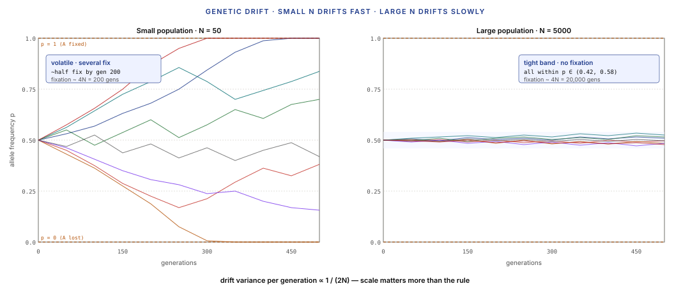
2.3 Selection
Selection adds a deterministic bias to the stochastic drift. Different genotypes have different fitness (survival × reproduction probability); higher-fitness genotypes contribute more to the next generation.
Fitness notation (for a single bi-allelic locus):
- $w_{AA}, w_{Aa}, w_{aa}$ = fitness of each genotype.
- Typically parameterised as $w_{AA} = 1, w_{Aa} = 1 - hs, w_{aa} = 1 - s$, where $s$ is the selection coefficient against $a$ and $h$ is the dominance coefficient.
The deterministic allele-frequency update:
$$p_{t+1} = p_t \cdot \frac{p_t w_{AA} + q_t w_{Aa}}{\bar{w}}$$
where $\bar{w}$ is mean fitness. Adding this to the WF sampling gives a Markov chain with drift ($\mathbb{E}[\Delta p]$ biased toward the higher-fitness allele) plus diffusion (still sampling noise).
Three regimes depending on $s$ vs $1/(2N)$:
- Strong selection ($|s| \gg 1/(2N)$): selection dominates; allele frequencies move deterministically toward whichever direction fitness prefers.
- Weak selection ($|s| \ll 1/(2N)$): drift dominates; the selected allele behaves nearly as if neutral.
- Moderate selection ($|s| \sim 1/(2N)$): both forces matter; stochastic dynamics with a bias.
The critical insight: whether a locus is "under selection" depends on both the strength of selection and the effective population size. A selection coefficient of 0.001 is strongly effective in a population of $N = 10^6$ (product $2Ns = 2000 \gg 1$) but is essentially neutral in $N = 100$ ($2Ns = 0.2$).
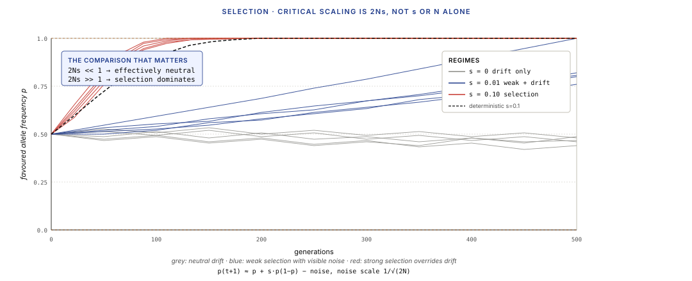
2.4 Mutation, migration, and effective population size
Mutation introduces new alleles. In the infinite-alleles model, each mutation creates a brand-new allele; the mutation rate $\mu$ is typically $10^{-8}$ per base per generation in humans. Genome-wide, roughly 70 new mutations per child. Most are lost within a few generations by drift; rare survivors contribute to population-level variation.
Migration moves alleles between populations. Parameterised by $m$, the fraction of the receiving population replaced by migrants per generation. A little migration ($m \sim 0.01$) homogenises allele frequencies between populations surprisingly fast on evolutionary timescales. Island models, stepping-stone models, and isolation-by-distance models formalise different migration structures.
Effective population size ($N_e$) — the holy grail of quantitative population genetics. The actual census size of a population is usually much larger than the size of an idealised WF population that would produce the same level of genetic variation. $N_e$ captures this: it's the size of an idealised population with the same drift behaviour as the real one.
Why $N_e \ll N$:
- Unequal reproductive success (a few individuals have many offspring).
- Skewed sex ratio.
- Fluctuating population size (bottlenecks reduce $N_e$ dramatically).
- Overlapping generations.
- Age-structured populations.
For humans: $N \approx 8 \times 10^9$ today, but $N_e \approx 10^4$ from most genetic evidence. The 10,000 effective size reflects population history — bottlenecks during our out-of-Africa expansion, founder events in most non-African populations, population sizes in our hunter-gatherer past — not our current census count.
$N_e$ is the relevant parameter for drift, selection thresholds, and most population-genetic predictions. Never confuse it with the current census population.
Part 3 · 35 min Linkage Disequilibrium
3.1 Why non-random allele associations
If alleles at two loci were completely independent (random across chromosomes), the probability of seeing a particular haplotype — say, allele $A$ at locus 1 and allele $B$ at locus 2 — would just be the product of their individual frequencies: $P(AB) = p_A \cdot p_B$.
In real populations, this independence usually fails. If alleles $A$ and $B$ arose on the same ancestral chromosome and haven't been separated by recombination, they co-occur more often than chance — they are in linkage disequilibrium (LD).
Three generative processes create LD:
- Historical founding. When a new allele arises by mutation, it is on one specific chromosome. Initially, it is perfectly correlated with all nearby alleles on that same chromosome (LD = 1 with everything flanking).
- Population admixture. When two populations with different allele frequencies mix, chromosomes carry population-specific haplotypes; the admixed population has LD between any pair of loci with differing frequencies.
- Selection. An allele under positive selection sweeps up in frequency; its flanking variants sweep along, producing a "selection footprint" of elevated LD around the selected locus (L12 §6).
Three destructive processes break LD:
- Recombination. Each generation, chromosomes swap segments during meiosis. Over enough generations, any pair of loci on the same chromosome is eventually broken apart.
- Drift. Stochastic allele-frequency changes weaken the deterministic co-occurrence pattern.
- Time. LD decays exponentially with the product of recombination rate and generation count.
3.2 LD measures: $r^2$ and $D'$
Two dominant LD statistics:
D (raw coefficient). Define $D = P(AB) - P(A) P(B)$ — the deviation of observed haplotype frequency from the product of allele frequencies. Positive $D$ = over-represented combination; negative = under-represented; zero = independence. $D$ depends on the allele frequencies themselves, which makes it hard to compare across loci.
$r^2$ (squared correlation). Normalise $D$ to produce something comparable:
$$r^2 = \frac{D^2}{p_A p_a \cdot p_B p_b}$$
This is the squared correlation between the allele indicators at the two loci. $r^2 \in [0, 1]$. $r^2 = 0$: independence. $r^2 = 1$: perfect correlation. This is the standard statistic in GWAS (L13) because power to detect a variant via a nearby tag depends on $r^2$.
$D'$ (normalised D). Another normalisation:
$$D' = D / D_{\max}$$
where $D_{\max}$ is the maximum achievable value of $D$ given the allele frequencies. $D' \in [-1, +1]$. Captures "structural" LD (which haplotypes exist) better than $r^2$ (which also requires similar frequencies). Often used together with $r^2$ to interpret LD patterns.
Practical computation from VCF data: plink --r2 or plink --ld computes these statistics genome-wide.
3.3 LD decay and haplotype blocks
Under no selection and random mating, LD decays exponentially with genetic distance:
$$r^2(c, t) \approx r^2(0) \cdot (1 - c)^{2t} \approx r^2(0) \cdot e^{-2ct}$$
for small $c$, where $c$ is the per-generation recombination rate between the two loci and $t$ is time since LD was established. One centimorgan (cM) ≈ 1% recombination per generation ≈ about 1 Mb in humans.
At the human genome scale:
- Within 10 kb: $r^2$ typically 0.5–0.9. Strong LD.
- 100 kb: $r^2$ typically 0.1–0.3.
- 1 Mb: $r^2$ typically below 0.05. Near-independence.
The genome-wide pattern: LD blocks. Regions where multiple loci are in high LD with each other, separated by narrow recombination hotspots where LD drops sharply. The 2002 International HapMap Project and its successors (1000 Genomes, HGDP, HPRC) empirically mapped these blocks; they are the basis for GWAS tag-SNP designs (L13).
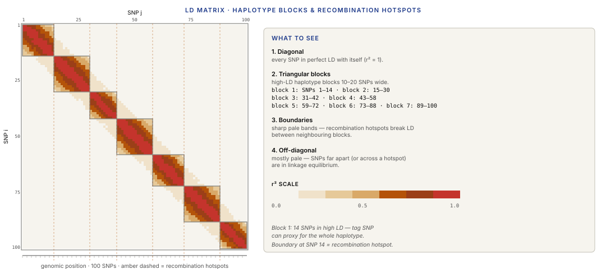
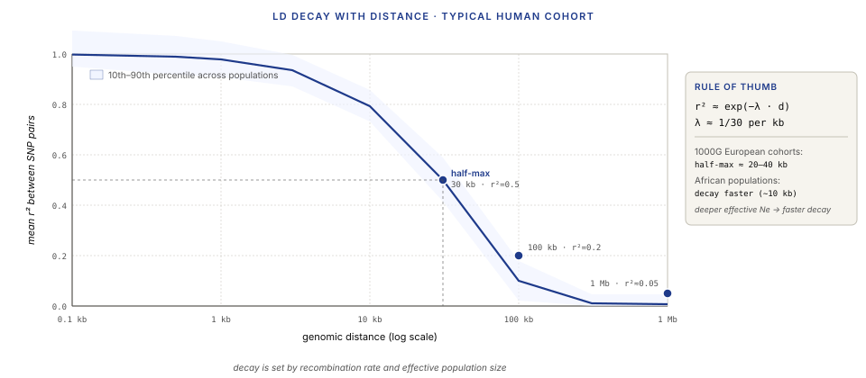
3.4 LD as autocorrelation
Part 4 · 45 min The Coalescent
4.1 Forward vs backward time
Wright-Fisher is a forward-time model: we start at some generation, apply the sampling rule, and track allele frequencies forward through time. This is natural when you want to simulate a population's evolution.
But the data we actually observe is today's population — a sample of $n$ present-day chromosomes. Running the model forward from some historical starting point is wasteful: most of the simulated lineages don't contribute to the sampled chromosomes anyway. We're interested in the ancestry of the sample, not the whole population history.
The coalescent (Kingman 1982) runs the model backward in time. It tracks only the lineages that ancestors the sample, working backward until they all merge into a single ancestor. This inverts the WF model and produces dramatic simplifications.
Why inverse time is easier: going forward, you have to simulate all $2N$ chromosomes in each generation, the vast majority of which leave no present-day descendants. Going backward, you only need to simulate the $n$ (and shrinking) lineages that actually ancestor the sample. For $n \ll N$, this is vastly cheaper.
4.2 The standard coalescent
The standard coalescent (Kingman's coalescent, for a single randomly-mating population) works as follows:
- Start with $n$ present-day sample lineages.
- Go backward in time. At each step, two lineages (randomly chosen) coalesce — they find their most-recent common ancestor (MRCA). The $n$-lineage state becomes an $(n-1)$-lineage state.
- Continue until only one lineage remains. That's the MRCA of the entire sample.
The key quantitative result: under Wright-Fisher with population size $2N$, the time (in generations) for any two randomly-chosen lineages among $k$ existing lineages to coalesce is exponentially distributed with rate $\binom{k}{2} / (2N)$:
$$T_k \sim \text{Exp}\left( \binom{k}{2} / (2N) \right)$$
Expected waiting times:
- From $n$ lineages to $n-1$: $\approx 2N / \binom{n}{2}$ generations.
- From $n$ lineages all the way to 1: $\approx 2N \sum_{k=2}^n 2 / (k(k-1)) = 4N(1 - 1/n)$ generations.
- Time to MRCA of the entire sample $\approx 4N$ generations for large $n$.
Remarkable consequence: the time to MRCA depends very weakly on sample size. Going from $n = 10$ to $n = 1000$ doesn't add much time — because the last two lineages take as long to coalesce as the first 998.
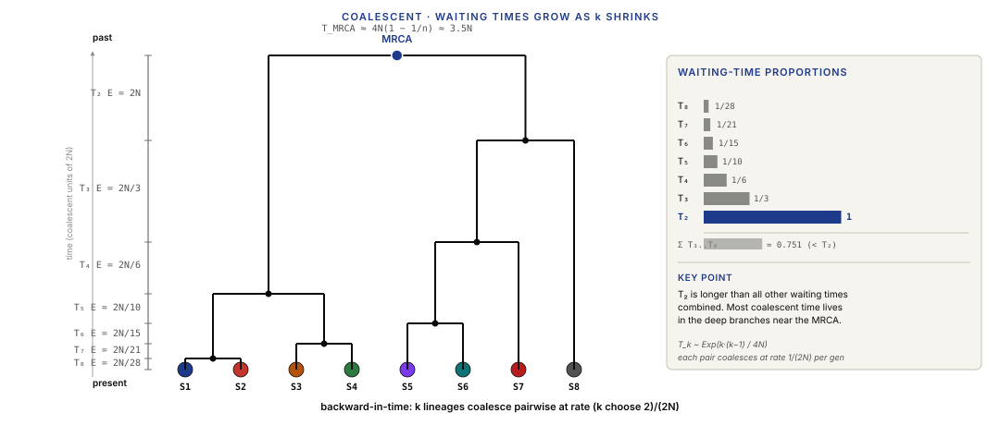
4.3 From coalescent trees to summary statistics
Given a coalescent tree and mutation rate $\mu$, we can predict everything about observed genetic variation:
- Number of segregating sites ($S$): the number of polymorphic sites in the sample. Expected value $\mathbb{E}[S] = \theta \sum_{k=1}^{n-1} 1/k$, where $\theta = 4N_e \mu$ is the population-scaled mutation rate.
- Expected pairwise nucleotide differences ($\pi$): average number of differences between two randomly-chosen chromosomes. $\mathbb{E}[\pi] = \theta$.
- Site-frequency spectrum (SFS): histogram of allele frequencies in the sample. Under neutrality, follows a specific shape (Watterson 1975).
These are Tajima's relations (Tajima 1983, 1989) — they give rise to Tajima's D, one of the cornerstone tests for departures from neutrality (covered in Part 6).
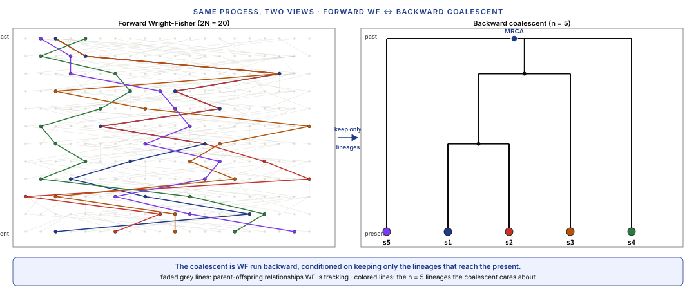
4.4 Ancestral recombination graphs (ARGs)
The standard coalescent assumes all sites along the chromosome share a single genealogy. Recombination breaks this: different parts of the chromosome have different genealogies, because crossovers during meiosis split lineages.
The generalisation is an ancestral recombination graph (ARG) — a coalescent-tree structure where each genomic position has its own tree, and the trees change (smoothly, mostly) as you move along the chromosome. At a recombination breakpoint, the tree structure shifts.
ARGs are computationally demanding. The standard tools:
- ms (Hudson 1983) and scrm (Staab et al. 2014): classical coalescent simulators, efficient for small samples and moderate recombination.
- msprime / tskit (Kelleher et al. 2016, 2022): modern, scalable. Represents ARGs as tree sequences that share ancestry between adjacent trees efficiently. Handles millions of samples.
- SLiM (Haller & Messer 2019): forward-time simulator with coalescent-compatible output for complex demographic / selection scenarios.
Tree sequences (msprime's data structure) are the current state-of-the-art: a compact encoding of the ARG that enables statistical computations (LD, allele frequencies, summary statistics) at genome scale.
Part 5 · 35 min Inferring Population History
5.1 PSMC — from a single genome
PSMC (Pairwise Sequentially Markovian Coalescent, Li & Durbin 2011) infers the effective population size $N_e(t)$ as a function of historical time $t$, using a single diploid genome as input. This was genuinely surprising when published — you would think you needed many samples to infer population history.
The trick: within a single diploid genome, you have two chromosome copies (maternal and paternal). The coalescent time for the two alleles at any given locus gives you information about $N_e$ at that specific point in history. Short coalescent times (the two alleles are similar) → recent MRCA → small $N_e$ at that time. Long coalescent times (alleles are very different) → ancient MRCA → larger $N_e$.
The algorithm (in rough outline):
- Split the diploid genome into windows.
- Model coalescent time at each window as a hidden state in an HMM.
- The HMM uses the sequentially-Markovian-coalescent (SMC) as the transition probability — adjacent windows have correlated coalescent times because of recombination structure.
- Emission probability: observed heterozygosity at each window, given the window's coalescent time.
- Fit $N_e(t)$ for a discrete time-mesh via Baum-Welch / EM.
Output: a step function $N_e(t)$ showing inferred effective population size going back ~1 million years.
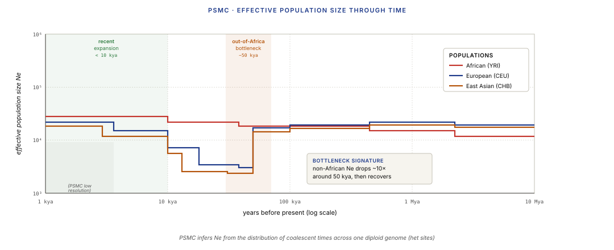
5.2 SMC++ and Relate
PSMC uses only a single diploid. SMC++ (Terhorst, Kamm, & Song 2017) generalises to multiple genomes. The trick is to combine:
- The diploid coalescent (PSMC-style) within an individual.
- The site-frequency spectrum (SFS) across individuals, which carries complementary information about recent population size changes.
Advantage over PSMC: much better resolution in the recent past (last 50 kya), where PSMC has little information because the two diploid alleles haven't had time to differ much.
Relate (Speidel et al. 2019) takes a different approach: it estimates the actual ARG (ancestral recombination graph) for the sample, then computes allele-age and branch-length distributions to infer demographic history. More computationally expensive than SMC++ but richer output — you get a genome-wide genealogy, not just a population-size trajectory.
tsinfer + tsdate (Kelleher et al. 2019, Wohns et al. 2022) scales the Relate approach to thousands of samples. The output is a tree sequence of the inferred ARG.
5.3 Admixture inference
Admixture is the genetic consequence of historical mixing between previously-separated populations. Modern humans are all admixed to some degree — out-of-Africa populations admixed with Neanderthals and Denisovans; recent centuries mixed populations across continents.
The canonical unsupervised model: each genome is a mixture of $K$ ancestral "components," each component having its own allele frequencies. The observed genotypes are sampled from this mixture.
- STRUCTURE (Pritchard, Stephens, & Donnelly 2000). The first Bayesian admixture method. MCMC inference over allele frequencies + individual ancestry proportions. Slow but gold standard.
- ADMIXTURE (Alexander, Novembre, & Lange 2009). Maximum-likelihood reformulation, 10–100× faster. The standard choice for modern analyses.
- fastSTRUCTURE (Raj et al. 2014). Variational approximation; similar speed to ADMIXTURE.
Each method fits $K$ (the number of ancestral populations) as a user-specified hyperparameter. The output is a per-individual ancestry-component vector, typically visualised as a stacked bar chart.
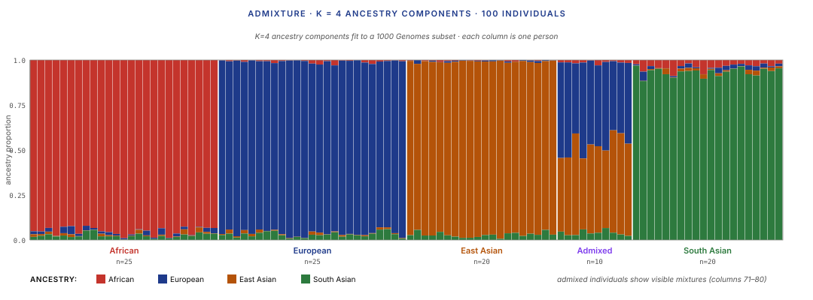
5.4 Demographic models in the wild
Real demographic inference combines multiple signals:
- Divergence times between populations (when did East Asians and Europeans diverge? ~25–40 kya from most estimates).
- Effective population sizes over time (PSMC / SMC++).
- Admixture events and dates (when did Neanderthal introgression happen? ~55 kya).
- Migration rates (how much gene flow between populations?).
Tools that combine these:
- δaδi (Gutenkunst et al. 2009). Fits demographic models to the joint site-frequency spectrum across populations.
- momi2 (Kamm et al. 2020). Fast demographic inference from summary statistics.
- Relate + tsdate: infer ARG + date it → read demographic history off the genealogy directly.
The output is a demographic model: a parameterised history (population sizes, split times, migration rates) that best explains the observed data. Real human demographic models now have 10–20 parameters; fitting them is an active research area.
Part 6 · 20 min Selection Scans
6.1 Tajima's D and neutrality tests
Tajima's D (Tajima 1989) is the classical test for departures from neutrality:
$$D = \frac{\pi - S / a_n}{\sqrt{\text{Var}(\pi - S/a_n)}}$$
where $\pi$ is expected pairwise differences, $S$ is the number of segregating sites, and $a_n = \sum_{k=1}^{n-1} 1/k$. Under neutrality, $\pi$ and $S/a_n$ both estimate $\theta = 4N_e\mu$, so $D \approx 0$.
Deviations:
- D > 0: excess of intermediate-frequency variants vs expected. Suggests balancing selection (stabilising multiple alleles at moderate frequency) or population structure.
- D < 0: excess of rare variants. Suggests positive selection (sweep eliminates surrounding variation, then new mutations accumulate as rare variants) or population expansion (recent growth introduces many new mutations at low frequency).
Tajima's D is computed in sliding windows along the genome; regions with extreme values are candidates for selection.
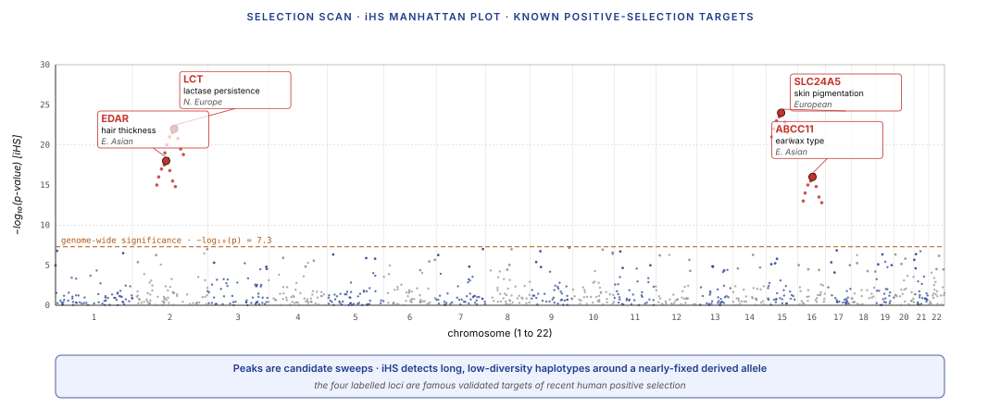
6.2 iHS and EHH — Extended Haplotype Homozygosity
iHS (integrated Haplotype Score, Voight et al. 2006) scans for recent, incomplete positive-selection sweeps. A sweep hasn't finished yet — the favoured allele is at intermediate frequency, but it's still carrying its surrounding haplotype. The signal: unusually long haplotypes around the favoured allele.
iHS is computed per SNP:
- At each SNP with frequency $p > 0.05$ and $< 0.95$, compute the extended haplotype homozygosity (EHH) for each allele — how fast does haplotype identity decay moving outward from the SNP?
- If the derived allele has unusually long haplotype homozygosity compared to the ancestral, iHS is extreme.
- iHS is standardised by allele frequency to make values comparable across SNPs.
XP-EHH (Cross-Population EHH, Sabeti et al. 2007) compares EHH at the same SNP across two populations. Extreme values suggest selection in one population but not the other — common for population-specific adaptations (skin pigmentation, lactase persistence, high-altitude adaptation).
6.3 Interpretation and failure modes
Selection scans produce long lists of candidate loci. Most of them are wrong. Key failure modes:
- Population-structure confounding. If subpopulations have different allele frequencies, pooled scans can flag loci that are just structure, not selection.
- Demographic events mimic selection. Bottlenecks and expansions reshape the SFS and haplotype structure in ways that resemble selection signatures.
- Background selection (removal of linked deleterious variants) reduces diversity genome-wide in gene-rich regions, mimicking positive-selection signal.
- Multiple testing. Millions of SNPs tested; the tail of the null distribution contains many false positives at genome-wide significance.
Good practice:
- Use neutral-demography null distributions derived from simulations (msprime, SLiM) rather than assuming Gaussian p-values.
- Combine multiple scan statistics (Tajima's D + iHS + XP-EHH) and require agreement.
- Validate top hits experimentally or through orthogonal evidence (e.g. GWAS, functional studies).
Wrap-up · 10 min Takeaways, homework, and next lecture
What you should take away
- Allele frequencies are the basic currency of population genetics. Hardy-Weinberg is the null distribution; deviations are the biological signal. HWE assumes none of drift, selection, mutation, migration — all of which operate, so HWE is never exactly true.
- The Wright-Fisher model is the simplest generative model. A Markov chain on allele counts; binomial transition; two absorbing states at fixation. Drift + selection + mutation + migration all modify the WF kernel.
- Effective population size $N_e$ is what matters for drift and selection thresholds — not census $N$. Humans: $N \approx 8$ billion, $N_e \approx 10{,}000$.
- Linkage disequilibrium is genome-scale autocorrelation. Decays exponentially with recombination × time. $r^2$ is the squared correlation; $D'$ is the normalised deviation. LD blocks are autocorrelation plateaus.
- The coalescent is the backward-time view of Wright-Fisher. Simpler to simulate (only the sample's lineages), same predictions as forward WF for sample-level statistics. TMRCA $\approx 4N_e$.
- Demographic inference from a single genome works. PSMC reconstructs $N_e(t)$ trajectories over millions of years using just the two diploid alleles' coalescent times.
- Admixture is mixture-model decomposition. ADMIXTURE is EM over ancestry proportions + source allele frequencies. $K$ is a hyperparameter, not a truth claim.
- Selection scans are detection with controlled FAR. Tajima's D, iHS, XP-EHH each detect different sweep signatures. All are confounded by demographic events; proper null calibration is essential.
Next lecture
GWAS (genome-wide association studies) and statistical genetics. Scaling multi-hypothesis detection to 10 million SNPs; population-stratification correction as noise whitening; polygenic risk scores and their portability problem; fine-mapping as a sparse-inverse problem.
Homework
- Take the 1000 Genomes Project VCF for one chromosome (chr22 is a common starter). For 1000 random SNPs with MAF > 0.05, compute the Hardy-Weinberg chi-squared statistic. What fraction deviate at $p < 0.05$? What fraction at $p < 10^{-6}$? Interpret.
- Simulate Wright-Fisher evolution for $N_e = 100$ and $N_e = 10000$, starting from $p_0 = 0.5$, running 1000 generations with $s = 0$. Plot 20 trajectories each. What fraction fix (reach 0 or 1) in each case?
- Use msprime to simulate a coalescent tree for $n = 20$ lineages and a population of $N = 10^4$. Repeat 1000 times. Report the median and 10–90th percentile of TMRCA.
- Run ADMIXTURE at $K = 2, 3, 4, 5$ on a subset of 1000 Genomes (e.g. CEU, CHB, YRI populations). Which $K$ gives the best cross-validation error? Plot the bar chart; does the biological interpretation change with $K$?
- Compute Tajima's D in 10 kb sliding windows across a 1 Mb region for a population. Identify the top 5 most extreme windows. Are any near known selection-target loci (check ensembl or UCSC)?
Recommended reading
- Hardy, G. H. (1908). Mendelian proportions in a mixed population. Science 28, 49–50. (The original HWE paper.)
- Wright, S. (1931). Evolution in Mendelian populations. Genetics 16, 97–159.
- Fisher, R. A. (1930). The Genetical Theory of Natural Selection. Oxford University Press.
- Kingman, J. F. C. (1982). The coalescent. Stochastic Processes and their Applications 13, 235–248.
- Tajima, F. (1989). Statistical method for testing the neutral mutation hypothesis by DNA polymorphism. Genetics 123, 585–595.
- Li, H., & Durbin, R. (2011). Inference of human population history from individual whole-genome sequences. Nature 475, 493–496. (The PSMC paper.)
- Alexander, D. H., Novembre, J., & Lange, K. (2009). Fast model-based estimation of ancestry in unrelated individuals. Genome Research 19, 1655–1664. (ADMIXTURE.)
- Voight, B. F., Kudaravalli, S., Wen, X., & Pritchard, J. K. (2006). A map of recent positive selection in the human genome. PLoS Biology 4, e72. (iHS.)
- Sabeti, P. C., Varilly, P., Fry, B., et al. (2007). Genome-wide detection and characterization of positive selection in human populations. Nature 449, 913–918. (XP-EHH.)
- Kelleher, J., Etheridge, A. M., & McVean, G. (2016). Efficient coalescent simulation and genealogical analysis for large sample sizes. PLoS Computational Biology 12, e1004842. (msprime.)
- Speidel, L., Forest, M., Shi, S., & Myers, S. R. (2019). A method for genome-wide genealogy estimation for thousands of samples. Nature Genetics 51, 1321–1329. (Relate.)
- Terhorst, J., Kamm, J. A., & Song, Y. S. (2017). Robust and scalable inference of population history from hundreds of unphased whole genomes. Nature Genetics 49, 303–309. (SMC++.)
- Slatkin, M. (2008). Linkage disequilibrium — understanding the evolutionary past and mapping the medical future. Nature Reviews Genetics 9, 477–485.
- 1000 Genomes Project Consortium (2015). A global reference for human genetic variation. Nature 526, 68–74.
- msprime documentation: tskit.dev/msprime
- Relate documentation: myersgroup.github.io/relate
- ADMIXTURE software: dalexander.github.io/admixture
Appendix — timing summary
| Block | Time | Cumulative |
|---|---|---|
| Part 1 — Allele Frequencies & Hardy-Weinberg | 25 min | 0:25 |
| Part 2 — Forces Shaping Variation | 40 min | 1:05 |
| Part 3 — Linkage Disequilibrium | 35 min | 1:40 |
| Part 4 — The Coalescent | 45 min | 2:25 |
| Part 5 — Inferring Population History | 35 min | 3:00 |
| Part 6 — Selection Scans | 20 min | 3:20 |
| Wrap-up | 10 min | 3:30 |
Total: ~3h 30min of content.